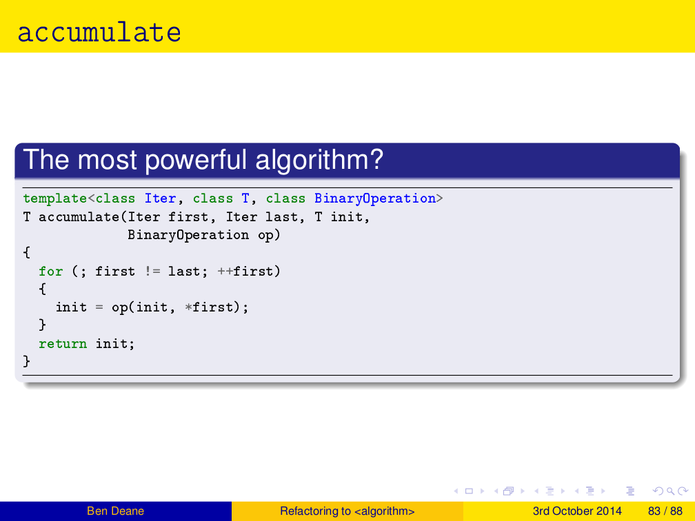

std::accumulate
Exploring an Algorithmic Empire
Ben Deane
bdeane@blizzard.com / @ben_deane
Sometime 2016
Part 0: The Most Powerful Algorithm in the World?
A Long Time Ago, In a Galaxy etc…

A Long Time Ago, In a Galaxy etc…

Part 1: Accumulatable Things
std::accumulate
template <class InputIt, class T, class BinaryOp> T accumulate(InputIt first, InputIt last, T init, BinaryOp op) { for (; first != last; ++first) { init = op(init, *first); } return init; }
Typical uses
vector<int> v = {1,2,3,4,5}; int sum = accumulate(v.cbegin(), v.cend(), 0, plus<>{}); cout << sum << '\n'; int product = accumulate(v.cbegin(), v.cend(), 1, multiplies<>{}); cout << product << '\n';
Of course, this is not why you're here. What else can we accumulate?
How about finding a min or max?
Value-based min_element or max_element
template <typename It, typename Compare, typename T = typename std::iterator_traits<It>::value_type> T min_element(It first, It last, Compare cmp) { // precondition: first != last auto init = *first; return acc::accumulate( ++first, last, init, [&] (const T& a, const T& b) { return cmp(b, a) ? b : a; }); }
What about bool values?
bool results[] = {true, false, true, true, false}; bool all_true = accumulate(cbegin(results), cend(results), true, logical_and<>{}); bool some_true = accumulate(cbegin(results), cend(results), false, logical_or<>{}); bool none_true = !accumulate(cbegin(results), cend(results), false, logical_or<>{});
Not that interesting yet…
The signature of the function
Ret fun(const Type1 &a, const Type2 &b);
So far, we've looked at Type1 and Type2 being the same.
Things get more interesting when they differ.
A more interesting bool case
map<int, weak_ptr<thing>> cache; shared_ptr<thing> get_thing(int id) { auto sp = cache[id].lock(); if (!sp) make_async_request(id); return sp; } void load_things(const vector<int>& ids) { bool all_cached = accumulate( ids.cbegin(), ids.cend(), true, [] (bool cached, int id) { return get_thing(id) && cached; }); if (!all_cached) service_async_requests(); }
bool As the Result
We use many function results as boolean values in control flow.
- actual
bool - pointers
- zero-result of a comparison trichotomy
- anywhere else we want to write
if (x)
This means we can use accumulate to collect these function values. (Similar to
all_of, any_of, none_of, but where we don't want the short-circuiting
behavior.)
More things…
- joining strings
- building requests from key-value pairs
- merging JSON objects
Building HTTP headers: Before
curl_slist* curl_headers = NULL; for (auto it = headers.begin(); it != headers.end(); ++it) { curl_headers = curl_slist_append(curl_headers, (format("%s: %s") % it->first % it->second).str().c_str()); }
Building HTTP headers: After
curl_slist* curl_headers = accumulate( headers.cbegin(), headers.cend(), static_cast<curl_slist*>(nullptr), [] (curl_slist* h, const auto& v) { return curl_slist_append(h, (format("%s: %s") % it->first % it->second).str().c_str()); });
What accumulate Can Do
- turns binary functions into n-ary functions
- collects results of functions whose outputs are monoidal
- allows part-whole hierarchies to be treated uniformly
- transforms one data structure into another
Why not just write a loop?
Two main advantages to accumulate
- It's often easier to write a binary function (or unary function with monoidal output)
- No declaration/initialization split
Part 2: Parallel Computation
Monoids everywhere
Part 3: Nonlinear Structures
Recall std::accumulate
template <class InputIt, class T, class BinaryOp> T accumulate(InputIt first, InputIt last, T init, BinaryOp op);
The T here deals with an empty sequence.
The BinaryOp deals with a non-empty sequence.
Part 4: Heterogeneous Sequences
Part 5: The Opposite of Accumulate?
Fold? Unfold
If accumulate is folding up a data structure to produce a value…
The opposite is "unfolding" a seed value to produce a data structure.
Part 6: The Fruits of Algorithmic Perversions
The Question
If you were stuck on a desert island, which algorithms would you take with you?
Maybe some "building block" algorithms?
partitionrotatereverse
Maybe some others?
Which algorithms are the most powerful?
What if you couldn't write any loops, so you're stuck with what you have?
The Algorithms (pre-C++17)
accumulateadjacent_differenceadjacent_findall_ofany_ofbinary_searchcopycopy_backwardcopy_ifcopy_ncountcount_ifequalequal_rangefillfill_nfindfind_endfind_first_offind_iffind_if_notfor_eachgenerategenerate_nincludesinner_productinplace_mergeiotais_heapis_heap_untilis_partitionedis_permutationis_sortedis_sorted_untiliter_swaplexicographical_comparelower_boundmake_heapmaxmax_elementmergeminmin_elementminmaxminmax_elementmismatchmovemove_backwardnext_permutationnone_ofnth_elementpartial_sortpartial_sort_copypartial_sumpartitionpartition_copypartition_pointpop_heapprev_permutationpush_heaprandom_shuffleremoveremove_copyremove_copy_ifremove_ifreplacereplace_copyreplace_copy_ifreplace_ifreversereverse_copyrotaterotate_copysearchsearch_nset_differenceset_intersectionset_symmetric_differenceset_unionshufflesortsort_heapstable_partitionstable_sortswapswap_rangestransformuniqueunique_copyupper_bound
Of 90 total, 77 are basically "plain loops"
Moving beyond sums and factorials
Elementary operations: count, max, min
Better composability
Iterator category considerations
Code and data through the accumulate lens
Balanced reduction
reduce: one of the heirs of accumulate
Big data, mapreduce etc
Accumulating tree structures
Further genericization
Application to variants
Logging as an accumulation
Beyond monoids
Genericizing logging
Unfolding data structures
Accumulation as its own dual?
The fruits of algorithmic perversions
Hunting for raw loops, redux
The Most Powerful Algorithm?
It's not even in <algorithm>…
APL calls it /
Many languages call it reduce
C++ calls it accumulate (or reduce in C++17, basically the same)
accumulate
with plus -> sum with multiply -> factorial count min/max
innerproduct
show generated code
more accumulations
ditch the "shall not modify elements" proviso
foreach copy transform remove/replace/etc
accumulateiter
maxelement (safe form of same using plain accumulate)
surprising forms
shuffle
reverse (with relaxed iterator category) likewise copybackward, movebackward
foldr with reverse iterators?
other applications
functions that return bool functions that return int functions that alter a data structure (insert/remove items) turn binary functions into n-ary functions infinite streams?
parallelization, balanced reduction
monoids McCarthy, Knuth, EoP chapter 11
tree folds?
view "list fold" as a fold that takes two constructors b -> (a -> b -> b) -> [a] -> b two constructors correspond to:
- b is how to convert [] to b
- (a -> b -> b) is how to combine element a with existing fold result b
fold for binary tree of a has similar signature: (a -> b) -> (b -> b -> b) -> Tree a -> a (a -> b) is how to convert a value a at leaf into a b (b -> b -> b) is how to combine two fold results (from subtrees)
in general any data structure can be folded given the appropriate functions to convert from each disjoint state
we could write fold for optional (it wouldn't be very interesting; optional is like a vector with a max of one element)
we could write a variadic fold for variant, taking a function for each type, and using the variant's index to select the right function
heterogeneous sequences
logging foldads
unfolds
compare generate, generaten possible formulations